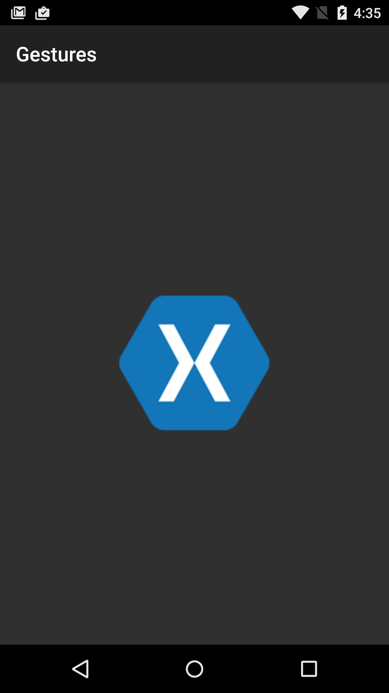
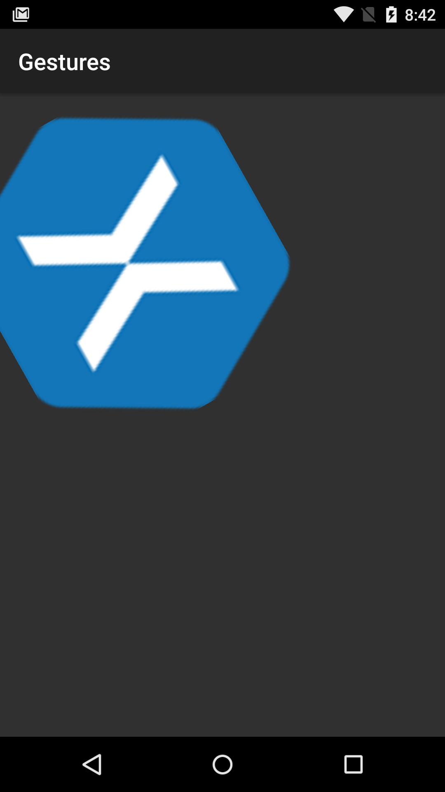

Duration
20 minutes
Goals
The primary goal of list lab is to create a rotation gesture recognizer and add it to an existing application.
|  |  |
Required assets
This exercise is a continuation of the previous exercise. You can use your existing solution or start with the completed solution in the Part 02 Resources folder. The Part 03 Resources folder contains a completed a solution which you can use to check your work. Please make sure you have these folders before you begin.
Steps
Below are the step-by-step instructions to implement the exercise.
Start by opening your completed solution from Exercise 2; alternatively, you can use the completed solution in the Part 02 Resources folder.
Create IOnRotationGestureListener
The Android APIs don't include a rotation gesture so we'll make one from scratch. The first step is to create the gesture interface.
- Add a new empty interface named IOnRotationGestureListener.
- Open the new file and add a single void method definition OnRotate that takes a single float parameter named angle.
- Change the namespace to RotationGesture.
Create a Rotation Gesture Detector class
We'll create a rotation gesture detector class from start to finish and we'll follow the patterns set out by the Android APIs.
- Create a new class called RotationGestureDetector.
- Change the namespace to RotationGesture.
- Add a private
IOnRotationGestureListenervariable named rotationListener. - Add a constructor that takes an
IOnRotationGestureListenerparameter named listener. - Set rotationListener using the passed in listener parameter.
- Add a public
booleanmethod called OnTouchEvent that accepts aMotionEventparameter named e.
Add additional class variables
We'll use a number of member variables to track and manage rotation state.
- Add 2 private integers named pId1 and pId2 which will store our pointer Ids.
- Add 2 private floats named angle and angleOffset.
- Add a private static integer named INVALID_ID and set it to -1.
Add the angle calculation code
To implement a rotation gesture detector, we'll need code to calculate an angle based on finger positions. This code has been provided for you below; you may examine it to see how it works.
- copy the two methods in the code block into your RotationGestureDetector class.
float GetAngle (MotionEvent e, int pointerId1, int pointerId2) { var x1 = e.GetX (pointerId1); var y1 = e.GetY (pointerId1); var x2 = e.GetX (pointerId2); var y2 = e.GetY (pointerId2); return GetAngle (x1, y1, x2, y2); } float GetAngle (float x1, float y1, float x2, float y2) { double angle = Math.Atan2((y1 - y2), (x1 - x2)); return (float)(angle * 180 / Math.PI); }
Respond to Touch Events
Just like we did in AND240, we'll create a switch statement in the OnTouchEvent method based on the MotionAction's ActionMasked.
- In
OnTouchEvent, create a switch statement based one.ActionMasked. - Add case statements for
MotionEventActions.Down,MotionEventActions.PointerDown, MotionEventActions.Move,MotionEventActions.PointerUp, andMotionEventActions.Up.
Respond to Down/PointerDown Actions
Remember, MotionEventActions.Down is triggered when the first finger touches the screen,
MotionEventActions.PointerDown is triggered for any additional fingers.
- In the case statement for
Down, save the current pointer Id to pID1. Get the current Id using theMotionEvent'sGetPointerIdmethod passing in theActionIndex. - In the case statement for
PointerDown, save the current pointer Id to pID2. - Use the
GetAnglemethod to find the initial angle of the fingers, from that subtract angle and save it to angleOffset.
Respond to Move Actions
The next steps are to be completed in the MotionActionEvents.Move case.
- Make sure we have valid Ids for 2 fingers; compare pId1 and pId2 against INVALID_ID. Return
falseif either is invalid. - Calculate the angle; use the
GetAnglemethod passing in both pointer Ids to calculate the angle. To find the true angle, subtract angleOffet and save the result in angle. - Notify the rotation listener; first check to make sure rotationListener isn't
null, then call itsOnRotatemethod passing in angle.
Respond to Up/PointerUp Actions
For the Up actions, we'll simply set our saved off pointer Ids to "Invalid". Remember, the order that we touch the screen isn't necessarily the same order that the fingers leave the screen, so we need to check the active Id before changing it.
- We'll use the same code for both Up Actions; change the switch statement so
MotionActionEvents.Upfalls through toMotionActionEvents.PointerUp. - Find the current id using the
MotionEvent'sGetPointerIdmethod passing in e.ActionIndex. - Compare the Id to the 2 saved Ids and set them to INVALID_ID if they match.
Add a Rotation Gesture Detector to MainActivity
The RotationGestureDetector class is now complete.
The final steps are to use the listener and create an instance of the detector in MainActivity.
- Add a class level
RotationGesturenamed rotationGesture. - Instantiate rotationGesture in the
OnCreatemethod, passingthisin for the listener parameter. - Pass the
MotionEvente to rotationGesture in theOnTouchEventmethod. - Implement
IOnRotationGestureListeneron MainActivity. - Create the required
OnRotationmethod. - In
OnRotation, set xamLogo'sRotationproperty to the passed in angle parameter. - Run the app!
Summary
In this exercise you completed your multi-gesture app by adding a custom rotation gesture to your existing scrolling and scaling application.
To achieve this, you had to build the rotation gesture from scratch by creating and implementing the IOnRotationGestureListener interface and the RotationGestureDetector class.